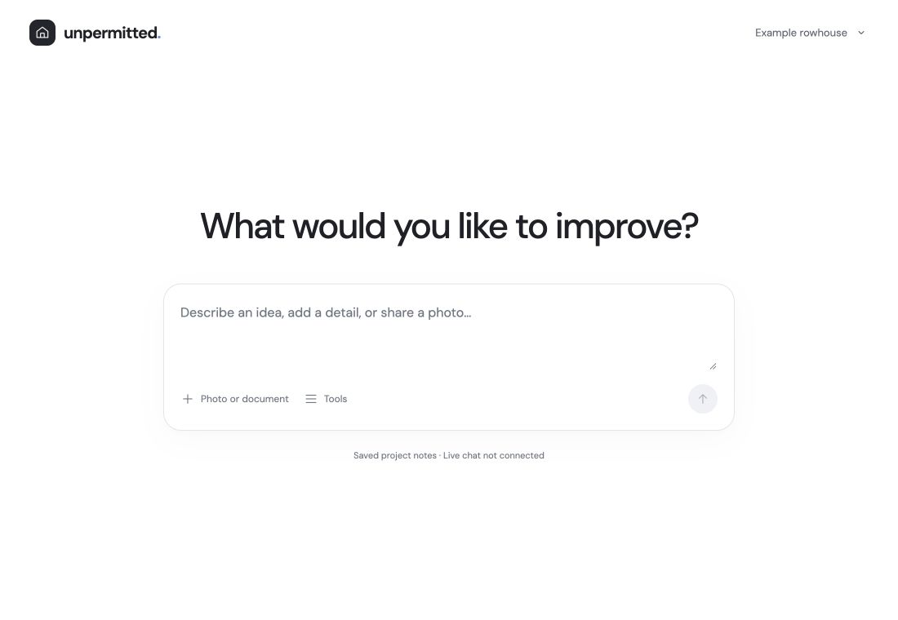
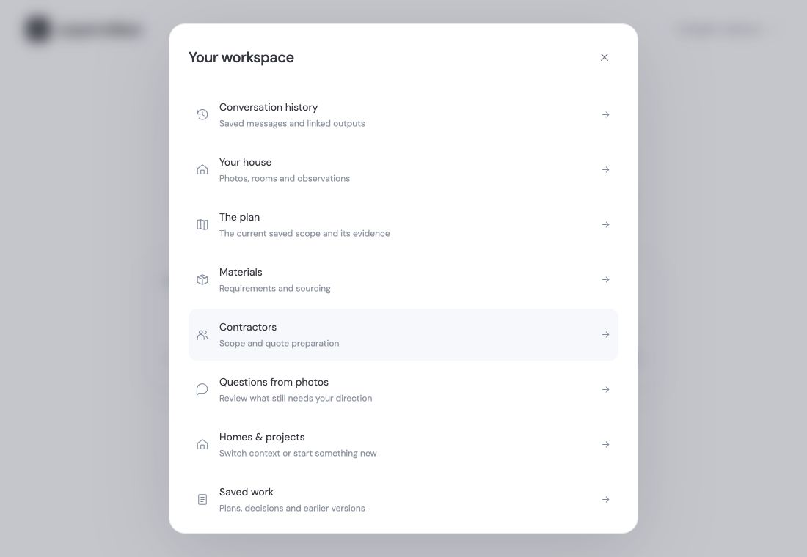
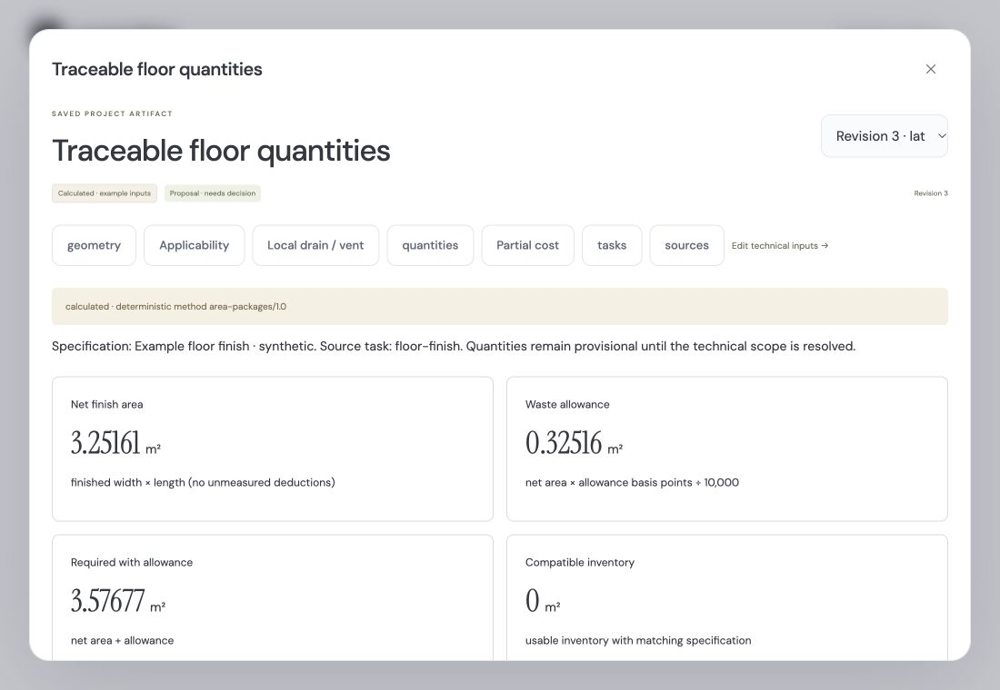

A house that keeps its context.
Photos, observations and decisions stay with the property. Start another project without starting from scratch.
Your home, your ideas. Give the next project a place to start.
Open your workspaceKeep the conversation, the context and the work together.



Photos, observations and decisions stay with the property. Start another project without starting from scratch.
Our next workflow links quantities to scope and compares supplier offers and contractor quotes on matching terms.
The planned API and MCP adapters let compatible agents work from the same records. The website is a place to review, not a required control room.
A working prototype, with a clear view of what comes next.
The local working tree includes durable project records, versioned evidence, a minimal web workspace, deterministic planning calculations and bounded Muse photo jobs backed by local MongoDB. The public static preview cannot run that local backend.
That is a core requirement. A current-workspace MCP adapter and hosted account access are still to be built. The older demo MCP endpoint is not the new project's canonical workflow.
Prove one complete path: missing site information → quote-ready scope → traceable materials → comparable offers → a revision-aware change. Live pricing, contractor verification and purchasing are not available yet.
No. Required reviews, permits and inspections remain part of the work. Renovagent prepares reviewable plans and material lists; a model proposal never becomes construction approval on its own.